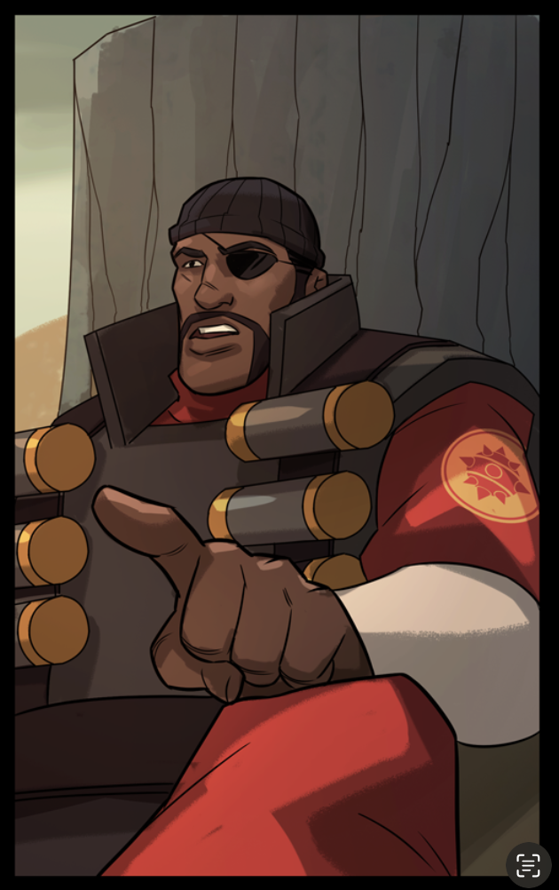

English
English
 Français
Français
 한국어
한국어
 Türkçe
Türkçe
 Svenska
Svenska
 Suomi
Suomi
 Español
Español
 Deutsch
Deutsch
 Polski
Polski
 Čeština
Čeština

What is this project ?
This project emcompasses the community efforts to translate the TF2 comics produced by valve. This extended to making a better place for reading the comics than the official website ever was, and now we hope to become the "comics guys" of the TF2 community. At first it was only to promote the translation of the comics using the TF2 comics translation kit. ##What does Valve think about this ? I (DRUNs) got Jay Pinkerton's benediction via email on managing this whole insanity of a work ! Apart from that, it's mainly the general Valve reaction around TF2 matter, not really caring. On the copyright side, international conventions allow us to translate any book and we'd be proprietary of the translation itself so everything should be cleared up. But to be honest I don't see Valve ever make any fuss about that. I heard that there was a good lawyer in Teufort NM, I might contact him tho.
What is the kit ?
Short answer : It is a tool made to help translators
for every language concentrate on the translation.
Long answer :
The TF2 Comics Translation Kit is a collection of several .psd
(photoshop documents) files themselves containing several
groups, one for each translation, those contain several text
layer and each one is packed with many sentences containing
words, those words are made of letters, many of them, which
are formalized by several curves and shapes called fonts (also
packed in the kit) those are numerically described by numbers,
1 and 0, that are basically a variation of an electrical
current generated by the alimentation of your computational
device. That aim to help translators get the comics to their
languages without having to worry too much about their
graphical skills or sanity, they just magically turn text into
some other text (less comprehensible). It's far from a perfect
industry standard for translation but I believe it's a great
base to provide a great quality for every language.
Needlessly, painstakingly very very long response :
The Team Fortress 2(Two) Comics Translation Kit should not
be regarded as a mere assortment of files, but rather as a
fully-fledged digital constellation, a sprawling ecosystem
composed primarily of numerous .psd files (that is,
“Photoshop Documents,” those magnificent, heavyweight titans
of layered imagery). Each of these files, far from being a
simplistic graphic vessel, contains within its metaphorical
belly an intricate, tree-like architecture of layer groups.
These groups, imbued with a noble linguistic destiny, are
meticulously designated to correspond to various
translations, potentially one for every language ever
spoken, imagined, or hastily improvised. Nested within each
of these groups resides a nontrivial quantity of text
layers. These layers serve as semantic containers, each
housing entire sentences, occasionally dismembered into
fragments, composed of clusters of words, themselves
carefully assembled from individual letters. These letters,
in order to avoid drifting off into conceptual abstraction,
manifest visually through the utilization of fonts, which
(through an act of profound foresight) are bundled directly
into the kit to prevent typographical tragedies or aesthetic
dissonance. These fonts are not mere ornamental artifacts:
they exist as vectorial or glyph-based configurations
defined by a labyrinthine tangle of Bézier curves, contour
descriptors, dimensional subtleties (and not "dimensional
subtitles" because those have yet to be invented before we
can even try to create them), and typographic metrics. Such
forms are translated into rigorously codified digital
descriptions, encapsulated within files whose underlying
substance reduces ultimately to an orchestrated alternation
of binary digits; zeros(0) and ones(1). These bits, in turn,
are nothing more than the conceptual shadow of an
ever-shifting electrical current, modulated, allowed, or
interrupted at the whim of transistors, each of which draws
vitality from that great and mysterious entity commonly
referred to as the power supply. This power supply (or PSU,
for those who speak in acronyms and coffee) infuses your
computational apparatus; be it a desktop machine,
workstation, laptopian artifact, or silicon-based
incantation with the necessary energetic essence to continue
existing. The lofty ambition of this techno-artistic
assemblage is to empower anyone engaged in the noble craft
of translation—whether an enthusiastic hobbyist or a
professional teetering on the brink of psychological
implosion, to adapt the Team Fortress 2(Two) comics into
their language without spiraling into a sanity crisis or
attempting a crash course in high-order graphic design.
Through this kit, users may devote themselves to the
alchemical task of transforming one(1) comprehensible text
into another text, typically less comprehensible, yet
proudly rendered in a different tongue. An act which in
itself is a multilingual miracle. Although this mechanism
may not ascend to the loftiest pinnacles of professional
translation standards, those hallowed grounds where each
word is revised, annotated, certified, controlled,
sanctified, and possibly notarized with the gravitas of an
intergovernmental treaty, it nevertheless serves as a solid
foundation, a springboard, a fertile substratum for any
individual aspiring to produce a visually and narratively
faithful localization, regardless of the language involved.
In summary, the kit positions itself as an outstretched hand
toward the linguistic universality of comics, offering every
idiomatic community the opportunity to express itself with
flair, all while preserving the user’s mental stability… or
whatever remains of it.
Main Philosophy
When I started the project I had no idea of what I was doing, but I knew one thing, I aimed for quality, and well-made work. I was fed up with the shitty translations I was seeing on manga scans, typos everywhere, senseless translations because the translator didn't translate the base material but the English translation. And sometimes they didn't even bother translating puns or neologisms. Not using the correct font, could you imagine reading a comic or a manga with Times New Roman ? Our goal is to create comics as they would have been officially translated by a team of impeccable hard working translators, wait... I mean we are those overtrained qualified unofficial translators, ain't we ?